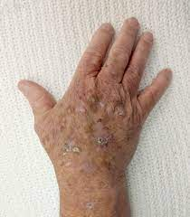

Actinic keratosis

CAUSES
The most common cause of actinic keratosis is too much exposure to ultraviolet (UV) light. UV light comes from the sun or indoor tanning equipment, such as tanning beds. UV light can damage your outer layer of skin cells, called keratinocytes.
SYMPTOMS
Usually, the first signs of actinic keratosis are rough, raised bumps on your skin. They can vary in color but often have a yellow or brown crust on top. These bumps may be: Gray, Pink, Red, Same color as skin
Symptoms may also include:
- Bleeding.
-
Burning, stinging or itching.
-
Dry, scaly lips.
-
Hornlike skin growths that stick out (like an animal’s horn).
-
Loss of color in the lips.
-
Pain or tenderness.
DIAGNOSIS
Your primary care provider, a dermatologist, (provider specializing in skin conditions) or other healthcare provider can often diagnose actinic keratosis by carefully examining your skin and using magnification. If your healthcare provider is uncertain or the skin looks unusual, she/ he may recommend a skin biopsy. This short, minimally invasive procedure enables your skin cells to be examined under a microscope to obtain a specific diagnosis.
TREATMENTS
Treatment options depend on how many actinic keratoses (AKs) you have and what they look like. Your healthcare provider may recommend removing the skin patches during an office visit.
To remove actinic keratosis, your provider may use:
-
Chemical peels: A chemical peel is like a medical-grade face mask. Your healthcare provider applies the peel during an office visit. The chemicals in the treatment safely destroy unwanted patches in your top layer of skin. In the first few days, the treated area will be sore and red. As the skin heals, you will see a new, healthy layer of skin.
-
Cryotherapy: If you have one or two AKs, your provider may use cryotherapy. During this treatment, your provider uses a cold substance such as liquid nitrogen to freeze skin growths. Within a few days, these growths will blister and peel off.
-
Excision: During this treatment, your healthcare provider first numbs the skin around your AK. Your provider then scrapes away or cuts out the AKs and stitches the area back together. Usually, your wound will heal in two to three weeks.
-
Photodynamic therapy: If you have multiple AKs or AKs that return after treatment, your provider may recommend photodynamic therapy. This treatment uses creams and special light therapy to destroy precancerous skin cells. You will need to stay out of the sun for a few days while the treated skin heals.